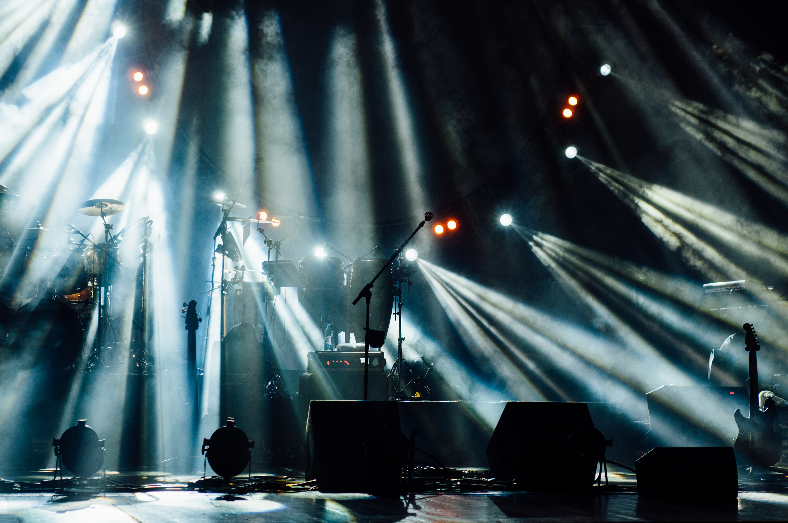
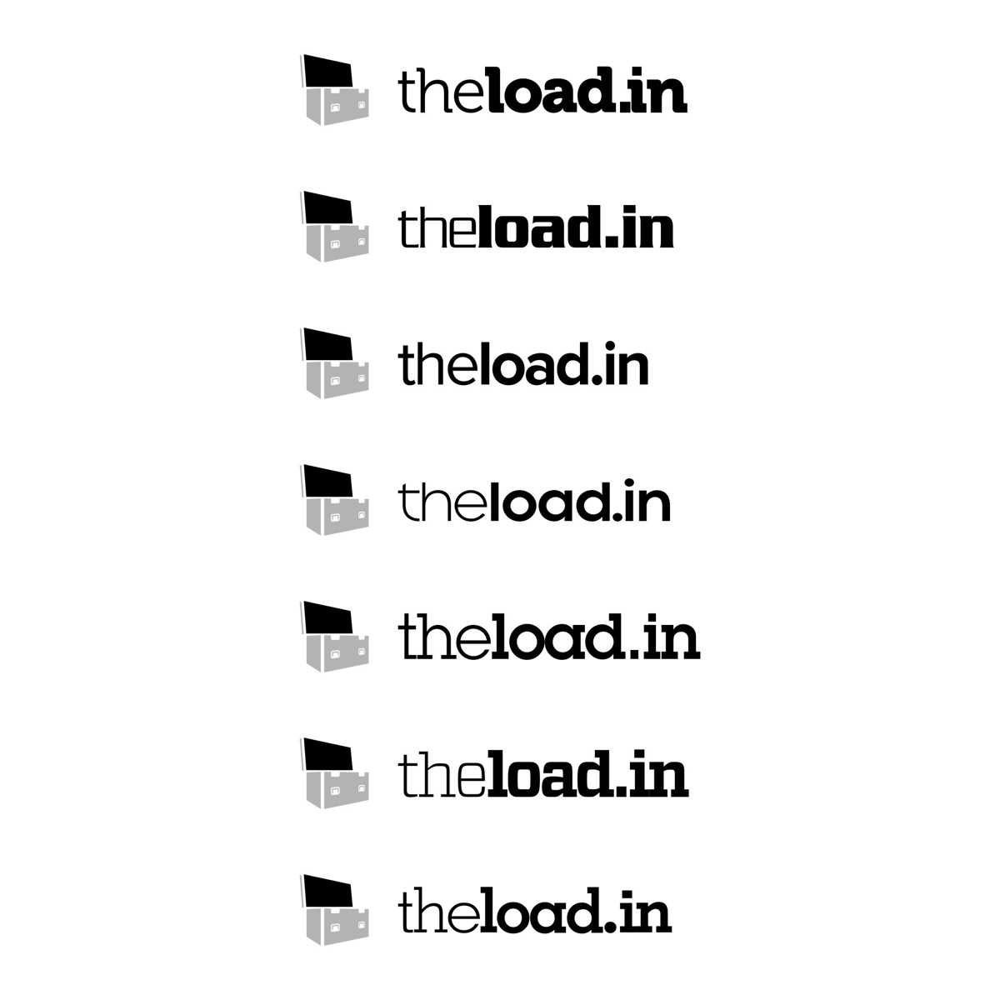
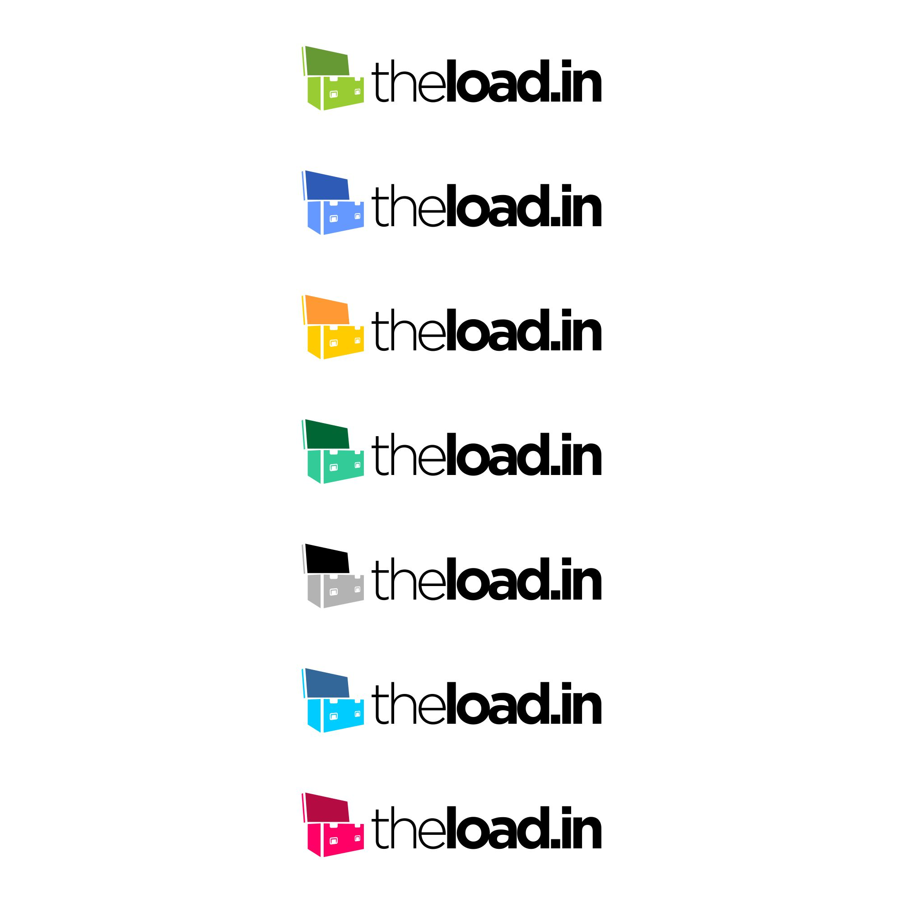

Building the brand that transformed an industry.
A headline act, a wrong stage layout, and 30,000 people waiting.
At Splendour in the Grass, Australia’s biggest music festival, the headline act was about to come onstage when they realised something was very wrong. The stage wasn’t laid out the way they’d specified. The video wall was in the wrong place. There were less than 15 minutes before they were due to play to 30,000 people. Person A had talked to person B, person C had talked to person D, and somewhere in between the specifications had diverged.
That production director was Haydn Johnston — my co-founder. Ever since, he’d had the vision to transform how the process known as ‘advancing’ works in live music. Previously it was loose. An email here, a fax there. No real acknowledgement that information was received and correct. We were starting at nothing — just a problem to be solved and no software in the world designed to solve it.
What’s in a name?
‘Loading in’ is the process of getting a band’s equipment from the transport to the stage. It’s the thing everyone in the industry does, every day. It seemed a perfect analogy for what we were building — a platform to get everything from chaos to stage-ready. From there, theload.in was born.
The plan was always to drop the ‘the’. Very few brands succeed with a ‘the’ as a prefix. After 18 months of traction, we secured loadin.com and rebranded. Brands that work as a .com are generally terms that indicate an online action of an otherwise offline task — booking.com, hotels.com. We always felt loadin.com was an example of this.
The flight case — the most universal object in live production
I always wanted the logomark to feature a flight case. Every crew member, every artist, every production manager knows these reinforced cases instantly — they’re the thing every piece of equipment travels in. Using one as the mark shows immediate awareness of the industry we serve.
The form came early. Drawn from the perspective you see most often: looking down at one backstage, latches open, ready to go. A late addition of wheels completed it — flight cases without wheels, it turns out, are not very useful.
For the logotype, I needed something that complemented the mark without competing with it. I didn’t want a typeface synonymous with the startup scene. It needed to be strong, in your face, but not ornate — there to get the job done with minimum fuss. I went with Gotham.
The kerning was deliberately tight. Loading in is not something done with a lot of time and space, and I wanted the logo to reflect that energy.

#FF2C55 — visible at 2am on a muddy festival site
I was conscious not to go blue. Twitter, Facebook, LinkedIn — that was a crowded space. I wanted Loadin to stand out so that when you saw a row of tabs in the browser, we’d be immediately obvious. The decision was made: hot pink.
It works. #FF2C55 is impossible to miss on a phone screen at 2am backstage, impossible to confuse with any other tool in the industry. It’s assertive without being aggressive, and warm enough to feel approachable in high-stress environments.

A Global Experience Language, built on Westpac GEL
I’m a big proponent of living design systems. I was lucky enough to work closely with one of the greatest early adopters — the Westpac GEL — during my entire tenure there, and was part of the working party that modernised it into a more Atomic Design-driven library.
As the Westpac GEL is open source, I based Loadin’s design system on that framework. All the major components were already tested for accessibility and best usability practices. I just needed to formulate the style guide on top — colours, typography, spacing, and over 100 custom SVG icons for concepts that had no visual representation before.
The brand font is Lato — a great screen font for both headings and body copy with a modern, efficient feel. Inputs are generous at 50px height because people are using this on phones with cold hands at outdoor events. Every decision traces back to the context of use.

With success comes changes
Everyone struggled with what to call us — The Load In, Load In, theloadin — even internally. After 18 months of success and the domain becoming available at a reasonable price, we took the jump. The rebrand to loadin.com was one of the best decisions we made.
In terms of the logo, I relaxed the kerning slightly. After seeing it every day, it felt a touch claustrophobic and needed a little air. The mark stayed. The colour stayed. The identity had earned its place.

Visual design grounded in context, not trends
Every visual decision in Loadin traces back to a real constraint: the environment it’s used in, the people who use it, the speed at which they need to work. The hot pink isn’t hot pink because it’s trendy — it’s visible at 2am on a muddy festival site. The flight case logomark isn’t clever for the sake of it — it’s the one object every user recognises instantly. The design system isn’t built from scratch for vanity — it’s built on proven foundations from Westpac GEL.
This is what visual design looks like when it’s in service of the problem.